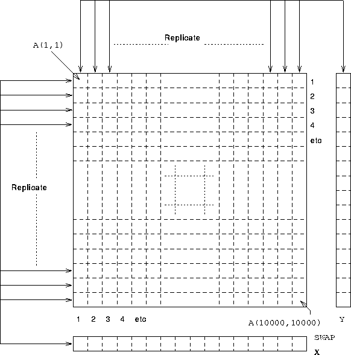

Next: New HPF Intrinsics
Up: Data Distribution
Previous: Gaussian Elimination - 2D

For more information, click here

Now try this question
Next: New HPF Intrinsics
Up: Data Distribution
Previous: Gaussian Elimination - 2D
Adam Marshall ©University of Liverpool, 1996
Tue Nov 26 19:51:50 GMT 1996